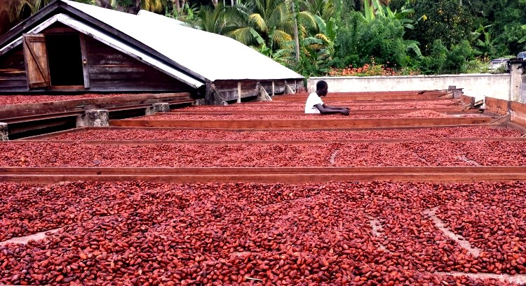
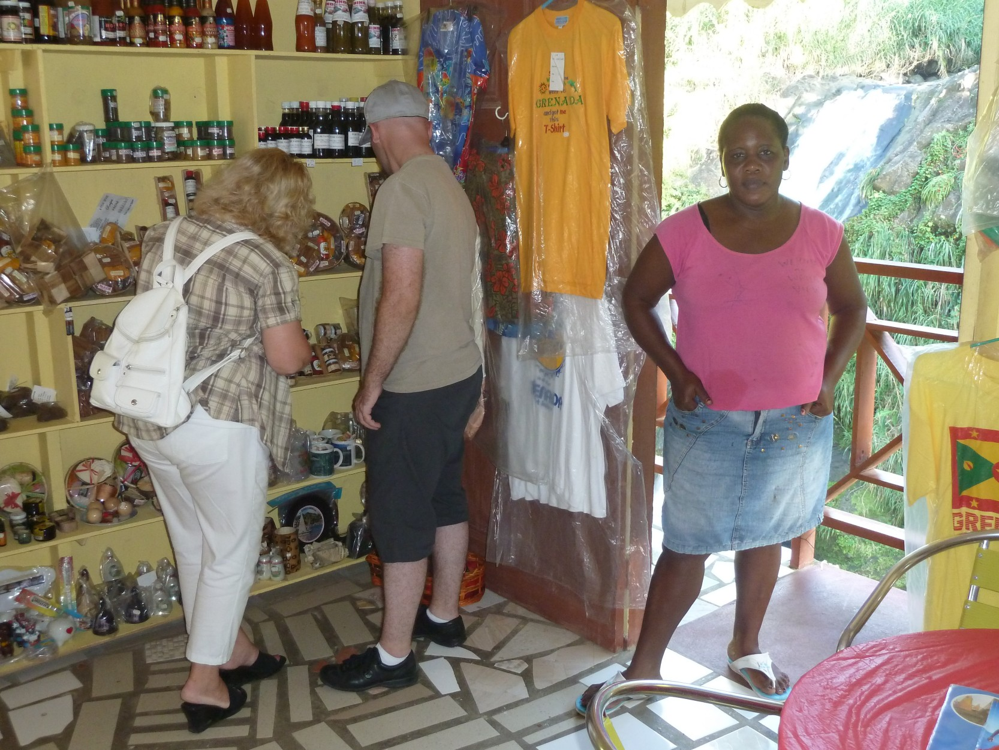

Uhuru
Explore the African-centered history and culture of Grenada. Immerse yourself in the island’s enduring African heritage, dating back to pre-colonial times. Visit historical sites and see well-preserved relics to learn about the past of Grenada. Broaden your horizons and deepen your appreciation of the fascinating history and culture of the island.
Full Day Tour
Our ancestors have left evidence of their presence locally and regionally for us to discover. Research has brought so much to the surface and exposed some left in plain sight.
Visit
- Fort George.
- The Carenage.
- The Grenada Museum.
- The Market Square.
- Selected Sights based on interest.
Walk in the footsteps of the ancestors from their arrival to life on the plantation and beyond. Check out my page on Grenada’s African history
Cocoa Tea
Grenada is a well-known producer of high-quality cocoa among chocolatiers. The Olmecs, an African civilization that existed before the Mayans, Aztecs, and Columbus arrived in the New World, were the first known civilization to make a beverage from cocoa beans, which they used for medicinal and ritual purposes.
The Mayans created a thick and foamy drink called “xocolatl,” which translates to bitter water. They roasted and ground cacao beans and mixed them with chillies, water, and cornmeal. Hernán Cortés introduced cocoa to Spain in 1528 after being given a cocoa beverage by the Aztec emperor.
The Ivory Coast and Ghana are the two largest cocoa producers.

Full Day Tour
Visit
- A Chocolate Factory.
- Grenada House of Chocolate.
- A Cocoa Processing plant.
- Cocoa Plantation.
- Others Sights by arrangement.
Indulge in the exquisite flavours of cocoa by sampling cocoa tea or Grenada chocolate. Enhance your knowledge of cocoa by learning about the intricacies involved in its growth, harvesting, and processing. Gain insights into the various products made from cocoa.
Join us on this enlightening journey to experience the flavours of cocoa and learn about its production and products.
Village Life
The rural areas in Grenada, often called the country, bear witness to the preserved traditions in our oral traditions, language, culinary and other aspects of Grenada’s heritage. One of the remarkable features of these rural areas is the harmonious blend of ancient customs with modern lifestyles, resulting in an exquisite fusion of the past and present.

Full Day Tour
Visit
- A School.
- A Church.
- Country Home.
- A Medical Center.
- Selected Sights based on interest.
The culture and tradition of the Grenadian people reside in the rural villages. These areas are perfect for visitors who want to experience authentic Grenadian hospitality and a peaceful and serene environment. This unique atmosphere is only found locally on the Spice Island of the Caribbean.
Diamond Lifestyle
Grenada is a beautiful island with a rich cultural heritage and a diverse population. This multi-cultural coexistence has influenced the daily life of the island. If you are interested in exploring the lifestyle that Grenada offers to its financially endowed residents, you can visit gated communities, villas, and mansions in their secluded surroundings. Grenadians are peaceful and friendly, which allows residents to build and live in remote and secluded areas of the island.
The island is a popular destination for the yachting community because of its location and the local services. You can get a glimpse into the lifestyle of the sea-farers and enjoy your time on land.
Full Day Tour
Visit
- Luxurious Residential Areas.
- Le Phare Bleu Marina.
- A Beach Resort.
- Dining by Request
- Others Sights by arrangement.
You have a choice of dining and menus in various settings and locations. Choose from the beach to the rain forest. As a guest you can expect the best advice to assist you with your dining wishes. Restaurant or catering by request and availability.
Contact me with your inquiries about the sights or any other activities you would like included in your Grenada tour.